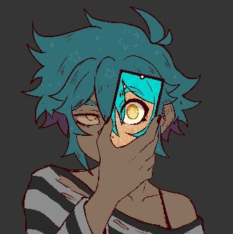

Q: What tablet do you use?
A: My first tablet was an XP-Pen Arist 12 pro and I stayed with it for a long time until I switched to the XP-Pen Magic Tablet which I love and think it's worth the money.

User: @razuberi_pastry • Online now
Status: Watching: Dorohedoro
→ 24 years old ⋆ She/Her ✮ Digital Artist ✮ Based in the U.S. ⋆
| TikTok |
| Commissions |
| Kofi |
Q: What tablet do you use?
A: My first tablet was an XP-Pen Arist 12 pro and I stayed with it for a long time until I switched to the XP-Pen Magic Tablet which I love and think it's worth the money.
Q: What software do you use for digital art?
A: I currently use Clip Studio Paint but the first software I used before it was Autodesk Sketchbook.
Q: What is the best way to start or get back into art?
A: Personally I think the best way to start or get back into art is to just have fun doodling small things first. Doodle shapes, or anything that feels easy. From there you can start working up to more complex doodles. It's important to remember to take breaks when you feel frustrated as well.